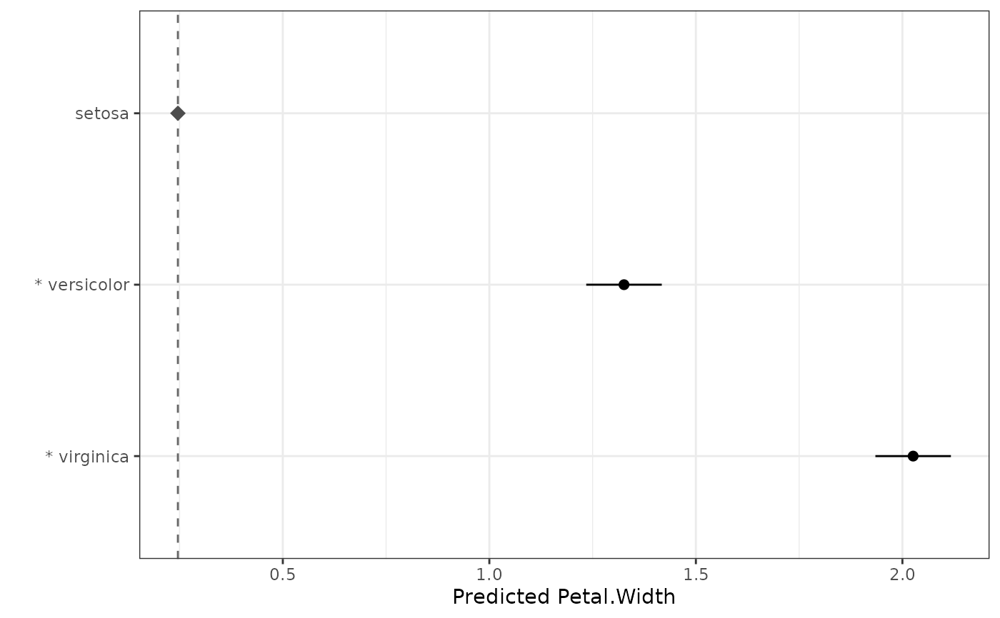
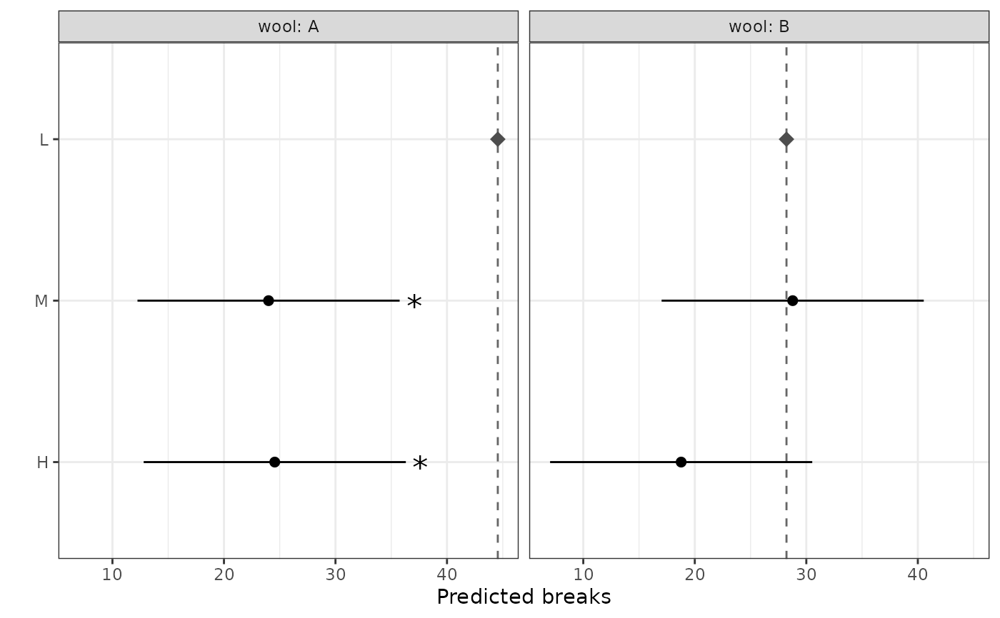

Compare predicted means against a single reference (control) level
Source:R/autoplot.R, R/reference_comparisons.R
reference_comparisons.RdCompare every level of a treatment factor against one chosen reference (control) level, returning a tidy, means-centric table: the predicted mean of each level, the reference mean, their difference, and a multiplicity-adjusted p-value for the difference. This is the honest representation of the common "how does each treatment compare to the control?" question (a Dunnett-style analysis), where significance attaches cleanly to each treatment because every comparison shares the same reference.
Usage
# S3 method for class 'reference_comparisons'
autoplot(object, ..., axis_rotation = 0, label_rotation = 0)
reference_comparisons(
model.obj,
classify,
reference,
adjust = "dunnett",
by = NULL,
sig = 0.05,
include_means = TRUE,
descending = NULL,
...
)
# S3 method for class 'reference_comparisons'
print(x, decimals = 2, ...)Arguments
- object
A
reference_comparisonsobject.- ...
Other arguments passed to the model-specific prediction methods (e.g. ASReml-R
predict()arguments).- axis_rotation
Rotation (degrees) of the x-axis (mean) labels.
- label_rotation
Rotation (degrees) of the y-axis (level) labels.
- model.obj
An
asreml,aov,lm,lme(nlme::lme()) orlmerMod(lme4::lmer()) model object.- classify
Name of the predictor variable(s) to compare, as a string. Interactions are specified with
:(e.g."Trt:Site").- reference
The reference (control) level to compare every other level against, as a single character string. When
byis used it is a level of the remaining (non-by) factor; for an interactionclassifywith nobyit is the full:-joined cell label, whose components must be in the same order asclassify(e.g."A:X"forclassify = "Trt:Site"). Each comparison ismean(level) - mean(reference), so a positive estimate is "above the control". See Details for guidance on interactionclassify.- adjust
The method used to adjust p-values for multiplicity over the set of comparisons against the reference. Default
"dunnett"performs the exact simultaneous two-sided Dunnett test (via the multivariate-t distribution). Any stats::p.adjust.methods value is also accepted (e.g."holm","bonferroni","BH");"tukey"is not valid here (usemultiple_comparisons()). See Details.- by
A character vector of one or more
classifyfactors over which to split the comparisons. The same reference set is tested, and adjusted, independently within each level (or combination of levels) ofby. DefaultNULL. See Details.- sig
The significance level for the confidence intervals, numeric between 0 and 1. Default is 0.05.
- include_means
Logical. The predicted means are central to this display, so they are always included (
level1.mean,level2.mean); settingFALSEis ignored with a warning.- descending
Tri-state control of row ordering within each by-group.
NULL(default) keeps prediction order;FALSEsorts ascending by estimate;TRUEsorts descending by estimate. This orders by the comparison estimate (each level minus the reference), unlikemultiple_comparisons()which orders by the predicted mean.- x
A
reference_comparisonsobject.- decimals
Number of decimal places to display. Default is 2. The p-value is shown to 3 significant figures (rather than rounded) so very small p-values do not collapse to zero.
Value
autoplot.reference_comparisons() returns a ggplot2 object: a
means plot with one point per level at its predicted mean, a dashed
reference line at the reference mean (marked with a diamond), and an
interval around each mean showing the (adjusted) confidence interval for the
difference from the reference — so the interval clears the reference line
exactly when the comparison is significant (with adjust = "dunnett").
Faceted by the by variable(s) when present. Significant comparisons are
flagged with an asterisk (*), prefixed to the y-axis label when unfaceted
or beside the interval when faceted.
A data.frame of class reference_comparisons with one row per
(group × non-reference level) and columns: any by column(s), level1,
level2 (the reference), comparison, estimate, level1.mean,
level2.mean (the reference mean), std.error, statistic, df,
p.value (adjusted), conf.low and conf.high. The reference level is not
given its own row (its mean appears as level2.mean on every row, and in the
reference attribute). Stored at full precision; rounding for display is
controlled by print.reference_comparisons(). If any levels were aliased
(not estimable) in the model they are dropped (with a warning) and recorded
in an aliased attribute; an aliased reference is an error.
print.reference_comparisons() invisibly returns x.
Details
Unlike multiple_comparisons() (all pairs, means + letters) and
pairwise_comparisons() (selected differences), reference_comparisons()
compares each level to a single control and presents the result around the
means. It works for every model supported by multiple_comparisons().
Why Dunnett is the default
Comparing several treatments to one control has an exact simultaneous
procedure — Dunnett's test — which uses the joint multivariate-t distribution
of the comparisons (accounting for the correlation induced by the shared
control). It is more powerful than applying a generic adjustment, so it is the
default. The exact test requires a single (common) degrees-of-freedom; for
models that report comparison-specific df, reference_comparisons() falls
back to "holm" with a warning. Any stats::p.adjust.methods method may be
requested explicitly (a message notes that Dunnett is the exact option).
The multivariate-t routine (mvtnorm::pmvt()) requires an integer
degrees-of-freedom, so a fractional denominator df (such as an ASReml-R
Kenward-Roger denDF) is rounded to the nearest integer for the Dunnett
calculation when two or more comparisons are made. The reported df column is
the exact (unrounded) value, and a single comparison uses the exact df. In
practice this rounding only affects asreml models with a fractional denDF
(aov/lm/lme have integer df, and mixed models with comparison-specific df
fall back to Holm).
The Dunnett correlation structure is taken from the variance-covariance matrix
of the predicted means that the prediction machinery returns, so the exact
test is available for every supported model engine. With adjust = "dunnett"
the confidence intervals are the
simultaneous Dunnett intervals and therefore agree with the adjusted test
(an interval excludes zero exactly when the comparison is significant). With a
stats::p.adjust() method the intervals are per-comparison and may disagree
with the adjusted p-value.
by semantics
by must be a subset of the classify factors. Within each group, the
reference and the compared levels reference the remaining (non-by) factor.
For example classify = "Trt:Site", by = "Site", reference = "Control"
compares every Trt level against Control within each Site, adjusted within
each Site. A group missing the reference, or with fewer than two levels, is
skipped with a warning.
To compare a control level against the others within every combination of the
remaining factors, put all the other factors in by. The within-group
factor is then the single control factor, so reference is just that level
(e.g. "0"). For example, with classify = "time:variety:dose" and a zero
dose labelled "0", by = c("time", "variety"), reference = "0" compares
each dose against the zero dose within every time-by-variety cell. Specified
this way reference is a single level, so it is unaffected by the order of
the factors in classify or by (those orderings only change the column
order and group labels of the output, not the comparisons).
Without by, by contrast, reference is the full :-joined cell label and
its components must follow the classify order. A mis-ordered label that
happens to name another valid cell is used silently (no error), so it is
worth double-checking the order matches; the order-proof by form above
avoids this entirely.
Supported model types
The comparison functions (multiple_comparisons(), pairwise_comparisons()
and reference_comparisons()) work with any model for which a
get_predictions() method is defined. These are currently:
| Model class | Fitted by | Notes |
aov, lm | stats::aov(), stats::lm() | Fixed-effects linear models. |
aovlist | stats::aov() with an Error() term | Multi-stratum aov; gives comparison-specific (matrix) degrees of freedom. |
lme | nlme::lme() | Linear mixed model. |
lmerMod | lme4::lmer(), lme4breeding::lmebreed() | Linear mixed model. lmebreed() (relationship-based) models also carry class lmerMod; comparisons target the fixed-effect means with Kenward-Roger degrees of freedom, and correctly reflect the relationship structure (validated against ASReml-R). |
lmerModLmerTest | lmerTest::lmer() | As lmerMod, with Satterthwaite degrees of freedom. |
asreml | ASReml-R asreml() | Linear mixed model (commercial; not on CRAN). |
afex_aov | afex aov_car() / aov_ez() / aov_4() | Factorial / repeated-measures ANOVA; gives comparison-specific (matrix) degrees of freedom. |
glmmTMB | glmmTMB glmmTMB() | Generalized linear mixed model. Predictions are on the link scale with asymptotic (infinite) degrees of freedom; supply trans to back-transform. |
mmes | sommer mmes() | Linear mixed model, via sommer's native predict(). SED from the prediction covariance; asymptotic (infinite) degrees of freedom (sommer provides none). |
ARTool (art) models are supported by resplot() but not by the comparison
functions: the aligned rank transform makes mean-based comparisons inappropriate.
Use ARTool::art.con() for contrasts on ART models instead.
sommer mmer models (the legacy interface) are supported by resplot() but
not by the comparison functions: current sommer provides no predict() method
for mmer. Refit with sommer::mmes() to use the comparison functions.
To add a new engine, write a get_predictions.<class>() method returning a
list with elements predictions, sed, df, ylab and aliased_names
(plus emmeans_grid for engines backed by emmeans::emmeans()), and add a
row to the table above.
See also
multiple_comparisons() for all-pairs means and letters,
pairwise_comparisons() for selected differences. For guidance on choosing
between them and on multiplicity adjustments, see
vignette("choosing-multiple-comparisons", "biometryassist").
Examples
# Means plot of each level vs the reference (significant ones marked with *)
dat.aov <- aov(Petal.Width ~ Species, data = iris)
rc <- reference_comparisons(dat.aov, classify = "Species", reference = "setosa")
autoplot(rc)

dat.aov <- aov(weight ~ feed, data = chickwts)
# Compare every feed against the "casein" control (exact Dunnett)
reference_comparisons(dat.aov, classify = "feed", reference = "casein")
#> Comparisons against a reference level
#> Classify: feed
#> Reference: casein
#> Adjustment method: dunnett
#> Significance level: 0.05
#>
#> level1 level2 comparison estimate level1.mean level2.mean
#> 1 horsebean casein horsebean - casein -163.38 160.20 323.58
#> 2 linseed casein linseed - casein -104.83 218.75 323.58
#> 3 meatmeal casein meatmeal - casein -46.67 276.91 323.58
#> 4 soybean casein soybean - casein -77.15 246.43 323.58
#> 5 sunflower casein sunflower - casein 5.33 328.92 323.58
#> std.error statistic df p.value conf.low conf.high
#> 1 23.49 -6.96 65 7.56e-09 -223.93 -102.83
#> 2 22.39 -4.68 65 6.32e-05 -162.57 -47.10
#> 3 22.90 -2.04 65 1.67e-01 -105.70 12.36
#> 4 21.58 -3.58 65 3.00e-03 -132.79 -21.52
#> 5 22.39 0.24 65 9.99e-01 -52.40 63.07
# A different adjustment can be requested (a message notes that Dunnett is the
# exact option for this family):
reference_comparisons(
dat.aov,
classify = "feed",
reference = "casein",
adjust = "holm"
)
#> Using adjust = "holm". For exact simultaneous control of all-vs-reference comparisons, adjust = "dunnett" is the exact method.
#> Note: confidence intervals are per-comparison (not adjusted for multiplicity), while the p-values are adjusted. A comparison's interval can therefore exclude zero when its adjusted p-value is not significant at `sig` (or, less often, the reverse).
#> Comparisons against a reference level
#> Classify: feed
#> Reference: casein
#> Adjustment method: holm
#> Significance level: 0.05
#>
#> level1 level2 comparison estimate level1.mean level2.mean
#> 1 horsebean casein horsebean - casein -163.38 160.20 323.58
#> 2 linseed casein linseed - casein -104.83 218.75 323.58
#> 3 meatmeal casein meatmeal - casein -46.67 276.91 323.58
#> 4 soybean casein soybean - casein -77.15 246.43 323.58
#> 5 sunflower casein sunflower - casein 5.33 328.92 323.58
#> std.error statistic df p.value conf.low conf.high
#> 1 23.49 -6.96 65 1.03e-08 -210.29 -116.48
#> 2 22.39 -4.68 65 5.97e-05 -149.55 -60.11
#> 3 22.90 -2.04 65 9.11e-02 -92.40 -0.95
#> 4 21.58 -3.58 65 2.00e-03 -120.25 -34.06
#> 5 22.39 0.24 65 8.12e-01 -39.39 50.05
# `by`: compare each level against the reference *within* each group, adjusted
# independently. Here a 2 x 3 factorial - each tension level vs the "L"
# reference within each wool type; autoplot() facets by wool.
m_wb <- aov(breaks ~ wool * tension, data = warpbreaks)
rc_by <- reference_comparisons(
m_wb,
classify = "wool:tension",
reference = "L",
by = "wool"
)
rc_by
#> Comparisons against a reference level
#> Classify: wool:tension
#> Reference: L
#> Adjustment method: dunnett
#> Significance level: 0.05
#>
#> wool level1 level2 comparison estimate level1.mean level2.mean std.error
#> 1 A M L M - L -20.56 24.00 44.56 5.16
#> 2 A H L H - L -20.00 24.56 44.56 5.16
#> 3 B M L M - L 0.56 28.78 28.22 5.16
#> 4 B H L H - L -9.44 18.78 28.22 5.16
#> statistic df p.value conf.low conf.high
#> 1 -3.99 48 0.000447 -32.31 -8.80
#> 2 -3.88 48 0.000626 -31.75 -8.25
#> 3 0.11 48 0.992000 -11.20 12.31
#> 4 -1.83 48 0.130000 -21.20 2.31
autoplot(rc_by)
